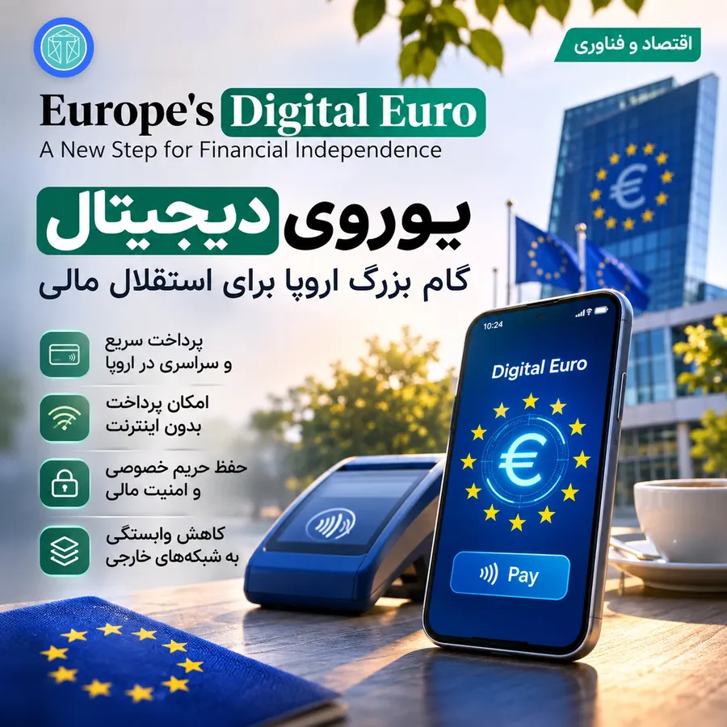
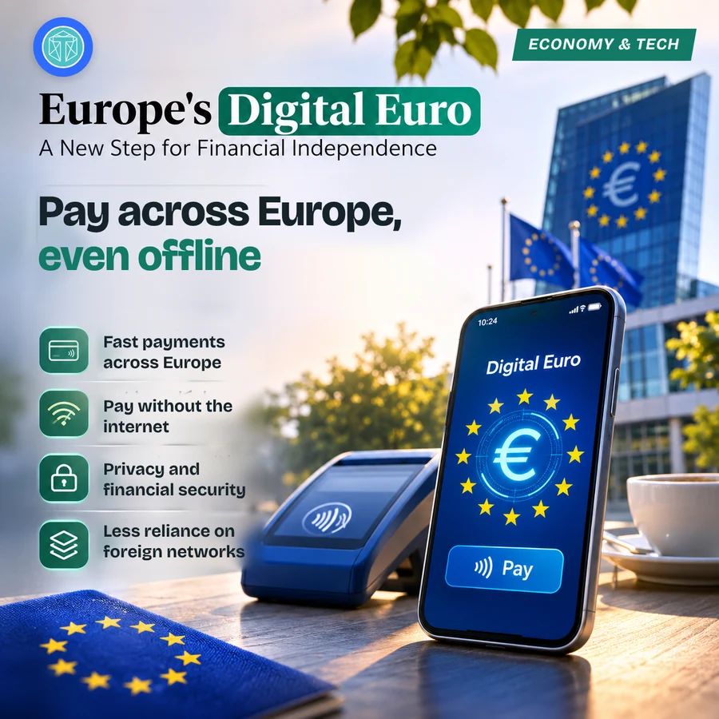

یوروی دیجیتال؛ گام بزرگ اروپا برای استقلال مالی، و معنایش برای ایرانیها
Europe’s digital euro: a big step for financial independence, and what it means for Iranians
یوروی دیجیتال چیست، چرا اروپا آن را میسازد، چه شرکتهایی در آن هستند، چه چیزهایی تغییر میکند و برای ایرانیان مقیم اروپا و داخل ایران چه معنایی دارد
What the digital euro is, why Europe is building it, which companies are involved, what it changes, and what it means for Iranians in Europe and in Iran
تصور کنید از لیسبون به پاریس، برلین یا رم سفر کنید و در همهی این شهرها، حتی بدون اینترنت، با یک کیف پول دیجیتال مشترک خرید کنید؛ بیآنکه پرداختتان از شبکههای آمریکایی Visa و Mastercard بگذرد. بانک مرکزی اروپا دارد زیرساخت همین آینده را میسازد. این گزارش میگوید یوروی دیجیتال چیست، چه شرکتهایی در آن هستند، چه چیزهایی را تغییر میدهد و برای ایرانیها، چه در اروپا و چه در ایران، چه معنایی دارد.
در یک نگاه
- یوروی دیجیتال پول الکترونیکی خود بانک مرکزی اروپاست؛ مثل اسکناس، ولی روی گوشی و کارت
- امروز حدود ۶۰٪ پرداختهای کارتی منطقهی یورو از شبکههای غیراروپایی میگذرد و ۱۳ کشور منطقهی یورو کاملاً به آنها وابستهاند
- رهبران اروپا میخواهند قانونش تا پایان ۲۰۲۶ نهایی شود؛ آزمایش ۱۲ ماهه با ۳۶ بانک و شرکت پرداخت از نیمهی دوم ۲۰۲۷ شروع میشود و نخستین عرضه برای ۲۰۲۹ هدفگذاری شده است
- خدمات پایه برای مردم رایگان است، پرداخت آفلاین ممکن است و پول نقد هم حذف نمیشود
- برای ایرانیان مقیم اروپا میتواند یک راه پرداخت ساده و ارزان باشد؛ برای ایرانیان داخل کشور مسیر تازهای برای انتقال پول باز نمیکند، ولی درسهای زیادی برای ریال دیجیتال دارد
خبر: کار به کجا رسیده است؟
کریستین لاگارد، رئیس بانک مرکزی اروپا، از رهبران اروپا خواسته تا پایان سال دربارهی قانون یوروی دیجیتال به توافق برسند. رهبران اتحادیهی اروپا هم در مارس ۲۰۲۶ همین هدف را گذاشتند.
مذاکرهی سهجانبهی پارلمان، شورا و کمیسیون اروپا از ژوئیهی ۲۰۲۶ شروع شده است. در دور ۱۸ نوامبر توافق نهایی به دست نیامد، ولی به گفتهی منابع پارلمان «گره واقعی» باقی نمانده و فقط دستور کار سنگین بود. دو تاریخ ۳ و ۱۶ دسامبر برای دورهای بعدی پیشنهاد شده است (Agence Europe).
لاگارد اعلام کرده که ۷ فوریهی ۲۰۲۷، نزدیک ۹ ماه زودتر از پایان دورهاش، از بانک مرکزی اروپا میرود. بانک مرکزی میگوید این رفتن پروژه را عقب نمیاندازد، چون یوروی دیجیتال «یک پروژهی راهبردی» است (Euronews).
۱. یوروی دیجیتال دقیقاً چیست؟
یوروی دیجیتال (Digital Euro) نوعی «ارز دیجیتال بانک مرکزی» یا CBDC است. هر یوروی دیجیتال دقیقاً برابر یک یوروی معمولی است.
تفاوت در این است که پول شما در حساب بانکی، در واقع بدهی یک بانک تجاری به شماست؛ اما یوروی دیجیتال مستقیماً تعهد بانک مرکزی است، مثل اسکناس، ولی الکترونیکی.
| ویژگی | یوروی دیجیتال | موجودی بانکی | اسکناس | بیتکوین | استیبلکوین |
|---|---|---|---|---|---|
| صادرکننده | بانک مرکزی | بانک تجاری | بانک مرکزی | شبکهی غیرمتمرکز | شرکت خصوصی |
| ارزش | برابر یورو | برابر یورو | برابر یورو | متغیر | معمولاً برابر یک ارز |
| سود | ندارد | بسته به حساب | ندارد | ندارد | معمولاً ندارد |
| آفلاین | بله | خیر | بله | محدود | خیر |
| سقف نگهداری | دارد | ندارد | ندارد | ندارد | ندارد |
یک باور رایج اشتباه است: یوروی دیجیتال روی بلاکچین عمومی ساخته نمیشود. بانک مرکزی اروپا یک زیرساخت تسویهی متمرکز طراحی کرده است (بانک مرکزی اروپا).
۲. چرا اروپا با یکی از معتبرترین ارزهای جهان، پول تازه میخواهد؟
اروپا ارز مستقل دارد، ولی «لولههای» پرداختش مال خودش نیست. طبق گزارش بانک مرکزی اروپا، حدود ۶۱٪ پرداختهای کارتی منطقهی یورو در ۲۰۲۲ از شبکههای کارت بینالمللی گذشت و ۱۳ کشور منطقهی یورو برای پرداخت کارتی کاملاً به این شبکهها وابستهاند (بانک مرکزی اروپا).
لاگارد در گفتوگو با یورونیوز گفت: «بهترین چیزی که میشناسم یک راهحل اروپایی است. در حال حاضر چنین چیزی نداریم.» او یادآوری کرد که اروپا بیشتر به شبکههای کارت آمریکایی و گاهی چینی وابسته است و اضافه کرد: «پول نقد از بین نمیرود، جوان میشود» (Euronews).
یک نمونهی واقعی نشان میدهد این وابستگی چه معنایی دارد. نیکولا گیو، قاضی فرانسوی دیوان کیفری بینالمللی، از اوت ۲۰۲۵ زیر تحریم آمریکاست. چون بسیاری از سیستمهای بانکی و دیجیتال اروپا به شرکتهایی مثل Visa و Mastercard متکیاند، او میگوید بهعنوان یک شهروند اروپایی عملاً از بخشی از بازار داخلی اتحادیه کنار گذاشته شده است. او از «سختگیری بیش از حد» بعضی بانکها هم گفت که از سر احتیاط تراکنش را رد میکنند (Agence Europe).
این پروژه به معنای حذف شرکتهای آمریکایی نیست؛ قرار است یک گزینهی مستقل دیگر کنار آنها باشد.
۳. در زندگی روزمره چه تغییری میکند؟
🛒 خرید روزمره
پرداخت در فروشگاه، رستوران و حملونقل با گوشی یا کارت سازگار، در همهی کشورهای منطقهی یورو با یک روش.
💸 فرستادن پول به دوست و خانواده
انتقال فوری از شخص به شخص در کل منطقهی یورو.
📴 پرداخت بدون اینترنت
پول آفلاین روی یک وسیلهی محلی، مثل گوشی یا کارت، ذخیره میشود و بدون اتصال کار میکند. پرداخت آفلاین رایگان است؛ ولی اگر وسیله گم شود، پول آفلاین روی آن هم از دست میرود.
🏪 کسبوکارهای کوچک
سقف کارمزدی که فروشگاهها میپردازند محدود میشود و رقابت میان شرکتهای پرداخت بیشتر میشود.
طبق موضع پارلمان اروپا، خدمات پایه رایگان است: باز کردن حساب، نگهداری پول، مدیریت موجودی و دستکم یک ابزار پرداخت. جریمهی عدم فعالیت هم ممنوع است (PPC Land).
یوروی دیجیتال «پول قانونی» خواهد بود، پس فروشگاهها معمولاً باید آن را بپذیرند. استثناها برای خویشفرمایان و کسبوکارهای خرد و کوچکی است که امروز هم پرداخت دیجیتال قبول نمیکنند.
۴. برنامهی زمانی
| زمان | مرحله |
|---|---|
| ۲۰۲۱ تا ۲۰۲۳ | پژوهش و طراحی اولیه |
| ۲۰۲۳ تا ۲۰۲۵ | آمادهسازی فنی و قراردادها |
| ژوئن ۲۰۲۶ | کمیسیون اقتصادی پارلمان با ۴۳ رأی موافق و ۱۴ مخالف موضعش را تصویب کرد |
| ژوئیهی ۲۰۲۶ | آغاز مذاکرهی سهجانبه؛ انتخاب ۳۶ ارائهدهندهی خدمات پرداخت برای آزمایش |
| اکتبر ۲۰۲۶ | انتخاب شرکتهای شبکه، از جمله Nexi و Telefónica |
| پایان ۲۰۲۶ | هدف توافق بر سر قانون |
| نیمهی دوم ۲۰۲۷ | آزمایش ۱۲ ماهه با کارکنان بانکهای مرکزی و فروشگاههای منتخب |
| ۲۰۲۹ | هدف نخستین عرضه، مشروط به تصویب قانون |
پارلمان میخواهد پس از مجوز، دستکم ۲۴ ماه برای آماده شدن بانکها و مردم فرصت باشد.
۵. آیا پول نقد حذف میشود؟
نه. یوروی دیجیتال مکمل پول نقد است، نه جایگزین آن. لاگارد صریح گفته که پول نقد و یوروی دیجیتال هر دو پول قانونی خواهند بود و کسی در اروپا نمیتواند اسکناس را رد کند. پارلمان اروپا هم همزمان قانونی برای حفاظت از پول نقد تصویب کرده است.
این برای سالمندان، کسانی که گوشی هوشمند ندارند و کسانی که نقد را ترجیح میدهند، مهم است.
۶. حریم خصوصی؛ چه کسی خریدهای ما را میبیند؟
- پارلمان اروپا خواسته که حریم خصوصی از پایه در طراحی باشد، با فناوریهایی مثل «اثبات دانش صفر» (zero-knowledge proof)
- بانک مرکزی اروپا به دادهی هویتی افراد دسترسی نخواهد داشت
- پرداخت آفلاین محرمانگی بیشتری دارد، نزدیک به پول نقد
- در پرداخت آنلاین، بانکها و شرکتهای پرداخت باید قوانین مبارزه با پولشویی را رعایت کنند
لاگارد رد کرده که هدف ردگیری پرداختها یا نظارت بر شهروندان باشد. با این حال، ارزیابی نهایی به قانون مصوب و نحوهی اجرا بستگی دارد. مسدود شدن موجودی، دسترسی قانونی به داده و حق اعتراض کاربران باید شفاف تعیین شود.
۷. چرا سقف نگهداری دارد و سود نمیدهد؟
اگر مردم میتوانستند بیسقف یوروی دیجیتال نگه دارند، در یک بحران مالی ممکن بود سپردههایشان را یکجا از بانکها بیرون بکشند. این کار منابع بانکها برای وام مسکن و وام به شرکتها را کم میکرد.
- سقف نگهداری وجود دارد، ولی رقمش هنوز تعیین نشده است. بانک مرکزی اروپا به درخواست قانونگذاران، سقفهای فرضی تا ۳ هزار یورو برای هر نفر را در تحلیل ثبات مالیاش آزموده است (بانک مرکزی اروپا)
- اینکه چه نهادی سقف را تعیین کند، شورا یا کمیسیون، یکی از اختلافهای اصلی مذاکرات است
- یوروی دیجیتال سود نمیدهد و سود منفی هم ندارد
- سقف نگهداری با سقف خرید فرق دارد: برای خرید بزرگ، مازاد خودکار از حساب بانکی متصل برداشته میشود
- کسبوکارها نمیتوانند یوروی دیجیتال نگه دارند، جز دریافتیهای تا ۲۴ ساعت
۸. چه شرکتها و نهادهایی در این پروژه هستند؟
| بازیگر | نقش |
|---|---|
| بانک مرکزی اروپا و ۱۹ بانک مرکزی ملی | صدور، زیرساخت و اجرای آزمایش |
| ۳۶ بانک و شرکت پرداخت، از جمله Deutsche Bank، UniCredit، Revolut، Adyen و Stripe | ارائهی کیف پول و پذیرش پرداخت در آزمایش؛ انتخاب از میان بیش از ۵۰ متقاضی |
| Nexi و Telefónica | شبکه و ارتباطات |
| Wero (طرح پرداخت اروپایی EPI) | کیف پول خصوصی اروپایی با حدود ۵۷ میلیون کاربر؛ رقیب و هممسیر |
| Visa و Mastercard | بازیگران فعلی که رقیب تازه پیدا میکنند |
منابع: Euronews، بانک مرکزی اروپا و EPI.
هزینهی پروژه هم کم نیست: حدود ۱٫۳ میلیارد یورو برای ساخت تا پیش از عرضه و حدود ۳۲۰ میلیون یورو در سال برای اداره از ۲۰۲۹، که بانکهای مرکزی منطقهی یورو میپردازند.
۹. چه چیزهایی تغییر میکند و چه چیزهایی کمرنگ میشود؟
| حوزه | چه میشود |
|---|---|
| کارتهای Visa و Mastercard | رقیب جدی پیدا میکنند؛ سهم و کارمزدشان زیر فشار میرود |
| کارمزد فروشگاهها | سقفدار و احتمالاً ارزانتر |
| بانکها | توزیع کیف پول و درآمد خدمات؛ ولی بخشی از سپردهها ممکن است جابهجا شود |
| فینتکها | کیف پولها و خدمات تازه روی یک زیرساخت مشترک |
| پرداختهای ملی پراکنده | یک استاندارد مشترک برای کل منطقهی یورو |
| گردشگری و سفر | یک روش پرداخت در ۲۰ کشور |
| تجارت الکترونیک | گزینهی پرداخت اروپایی بدون کارت |
| امنیت سایبری | تقاضای بیشتر برای حفاظت از زیرساخت مالی |
| استیبلکوینها و کیف پولهای خصوصی | رقابت مستقیمتر در پرداخت |
۱۰. برای ایرانیها چه معنایی دارد؟
🇪🇺 ایرانیان مقیم اروپا
- یک راه پرداخت رایگان در کل منطقهی یورو، برای خرید، فرستادن پول به خانواده و دوستان در اروپا و سفر میان کشورها
- خدمات پایهی رایگان از طریق بانکها و شرکتهای پرداخت؛ البته با احراز هویت معمول
- کاهش وابستگی به شبکههای کارت آمریکایی. بسیاری از ایرانیان مقیم اروپا تجربهی سختگیری بانکها به خاطر ملیت را دارند. اینکه آیا یوروی دیجیتال برای کسانی که تحریم کشورهای ثالث شامل حالشان شده هم در دسترس باشد، یکی از موضوعات مذاکره است و هنوز قطعی نشده است
- برای کسبوکارهای کوچک ایرانیان در اروپا، از رستوران تا فروشگاه: احتمال کارمزد کمتر
✈️ دانشجویان و مسافران
- یوروی دیجیتال فقط برای ساکنان دائم نیست. طبق توضیح بانک مرکزی اروپا، کسانی که موقت در منطقهی یورو ساکناند، مثل دانشجویان، و مسافرانی که برای کار یا تفریح سفر میکنند هم میتوانند به آن دسترسی داشته باشند (بانک مرکزی اروپا)
- برای مسافر، یعنی یک روش پرداخت در ۲۰ کشور منطقهی یورو؛ جزئیات نهایی به قانون مصوب بستگی دارد
🇮🇷 ایرانیان داخل کشور
- یوروی دیجیتال مسیر آزادی برای انتقال پول میان ایران و اروپا باز نمیکند. همان قوانین احراز هویت و تحریمها برقرار است
- دیجیتالی شدن پول بهتنهایی مشکل تورم یا کاهش ارزش پول ملی را حل نمیکند
- ولی برای آیندهی بانکداری ایران درسهای مهمی دارد. ایران هم پروژهی ریال دیجیتال را دنبال میکند: از ۲۰۱۸ در دست ساخت است، پیشآزمایش با بانکهای بزرگ را در ۲۰۲۳ گذراند و آزمایش عمومی آن از ۲۰۲۴ در جزیرهی کیش شروع شد (Cointelegraph)
درسهای یوروی دیجیتال برای ریال دیجیتال
- پرداخت آفلاین، برای وقتی که اینترنت قطع است
- حریم خصوصی تضمینشده در قانون، نه فقط در وعده
- سقف نگهداری، برای اینکه بانکها خالی نشوند
- خدمات پایهی رایگان و کارمزد سقفدار برای فروشگاهها
- حفظ پول نقد کنار پول دیجیتال
۱۱. آیا رقیب رمزارزهاست؟
تا حدی، در پرداخت؛ ولی نه در همهی کاربردها. یوروی دیجیتال برای پرداخت با ارزش ثابت و پشتوانهی بانک مرکزی طراحی شده؛ بیتکوین روی یک شبکهی غیرمتمرکز است و بیشتر برای نگهداری ارزش به کار میرود.
رقابت مستقیمتر با استیبلکوینها، کیف پولهای خصوصی و شبکههای پرداخت است. پیام بزرگتر این است که پول دیجیتال دیگر فقط موضوع بازار رمزارز نیست؛ بخشی از برنامهی زیرساخت مالی کشورها شده است.
تحلیل دیتومان
اهمیت یوروی دیجیتال فقط در سادهتر شدن خرید نیست. در اقتصاد آینده، مالکیت زیرساخت انتقال پول به اندازهی چاپ خود پول اهمیت دارد. اروپا این را دیر، ولی جدی فهمیده است.
اگر اروپا بتواند شبکهای ارزان، امن، فراگیر و مستقل بسازد، مردم و کسبوکارها حق انتخاب بیشتری خواهند داشت. موفقیتش به اعتماد بستگی دارد: اینکه مردم آزادانه میان نقد، حساب بانکی و پول دیجیتال انتخاب کنند و حریم مالیشان حفظ شود.
برای ما ایرانیها هم این یک درس روشن است: آیندهی پول فقط دیجیتالی شدنش نیست؛ اختیار بیشتر انسان در استفاده از پولش است.
شما ترجیح میدهید پولتان در حساب بانکی باشد یا در کیف پول دیجیتالی که مستقیم به بانک مرکزی وصل است؟
بیشتر بخوانید
منابع
- Euronews: ECB says Lagarde’s exit will not delay the digital euro (11 Nov 2026)
- Agence Europe: Negotiators to meet in December to finalise digital euro (19 Nov 2026)
- Euronews: Digital euro will not replace cash, Lagarde says (9 Jul 2026)
- European Central Bank: Digital euro
- European Central Bank: FAQs on the digital euro
- European Central Bank: 36 PSPs selected for the digital euro pilot (14 Jul 2026)
- Euronews: ECB selects 36 payment providers for the pilot
- European Central Bank: Most countries rely on international card schemes (2025)
- PPC Land: MEPs cap digital euro holdings after 43-14 vote
- Agence Europe: Sanctioned ICC judge warns on Europe’s banking sovereignty
- EPI: Wero key figures
- Cointelegraph: Iran digital rial launch
آخرین بازبینی: ۵ آذر ۱۴۰۵. برنامهی زمانی و طراحی از صفحههای رسمی بانک مرکزی اروپا، وضعیت مذاکرات از Agence Europe و Euronews، و موضع پارلمان از گزارش رأیگیری ژوئن ۲۰۲۶ بررسی شد. قانون هنوز تصویب نشده و جزئیاتی مثل سقف نگهداری و کارمزدها ممکن است تغییر کند. بخش تحلیل، ارزیابی دیتومان است.